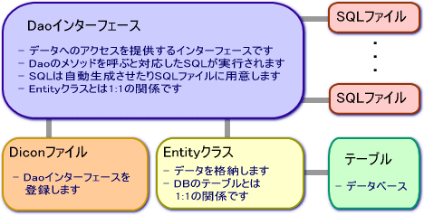
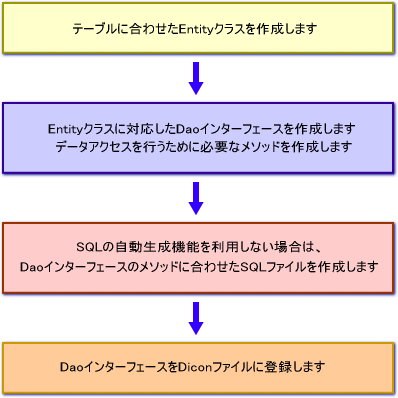

|
 |
|||||
S2Dao.NET TOPページへ
S2Dao.NET - 手順（作成すべきファイル）下図はS2Dao.NETの概要図です。  S2Dao.NETを使用するにあたり、Entityクラス, Daoインターフェース, SQLファイル, Diconファイルの作成を行います。 S2Dao.NETは下記の手順で利用します。  各ファイルの実装・設定方法の詳細は次のドキュメントを参照して下さい。
|
||
| © Copyright The Seasar Project and the others 2004-2005, all rights reserved. |